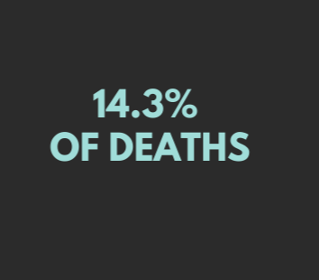
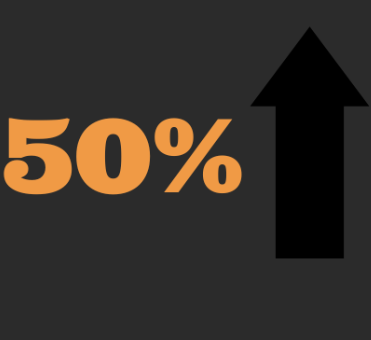

Global Mental Health Statistics
Mental illness and health are human rights issues and need to be discussed in today’s world. These global mental health statistics give us an overview of how mental illness affects people. Understanding how mental illness affects people around the world can help us better solve the mental health crisis we are in.
Global Mental Health Statistics Overview
970 million people with mental illness
970 million people around the world struggle with some mental illness or drug abuse.
1 in 4 people will be affected by a mental illness
1 in 4 people will be affected by a mental illness at some point in their lives.


14.3% of mental health victims die
14.3% of deaths worldwide, or approximately 8 million deaths each year, are attributable to mental disorders.

Mental illness up fifty percent
The prevalence of all mental disorders increased by 50% worldwide from 416 million to 615 million between 1990 and 2013.
Depression and Anxiety Disorder Statistics
- Depression affects over 300 million people worldwide, regardless of culture, age, gender, religion, race or economic status.
- More than 75% of people in low- and middle-income countries receive no treatment for depression.
- High-income countries offer “minimally-adequate” treatment for depression in 23% of cases, compared to just 3% in low and lower middle-income countries.
- Suicide is the fourth leading cause of death among people aged 15-29.
- 284 million people suffer from an anxiety disorder worldwide.
- Anxiety disorders disproportionately affect women (4.7% of females vs. 2.8% of males).
- In a 2020 survey, 62% of respondents reported experiencing some degree of anxiety.
- In the first year of the COVID-19 pandemic, global prevalence of anxiety increased by 25%.